一弯新月，一页新章。
极简 Markdown，落笔即入画。
大模型时代的工作语言是 Markdown。Agent 的过程文档、对话导出、知识库、RAG 语料——月初把它们全部接住：所见即所得、双向链接知识图谱、编码感知读写、多格式导出。
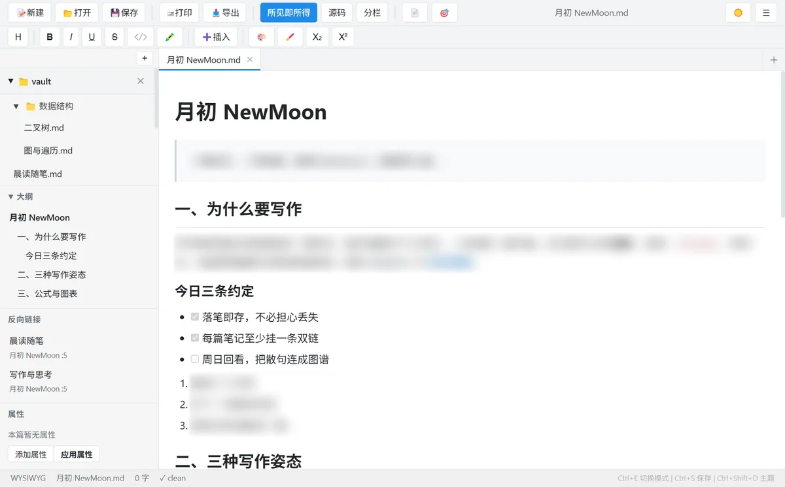
从落笔到成稿：写作、组织、计算、呈现、导出——五个环节，逐一打磨。
基于 Tiptap / ProseMirror 的实时渲染：输入 Markdown 语法，字符当场化为格式；随时切回源码模式，纯文本永远是你的底牌。
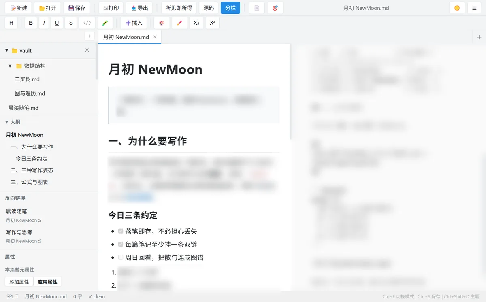
双栏模式点图放大一个文件夹就是一个库。[[双向链接]] 把笔记织成网：反向链接面板、悬停预览、力导向图谱，知识不再是一座座孤岛。
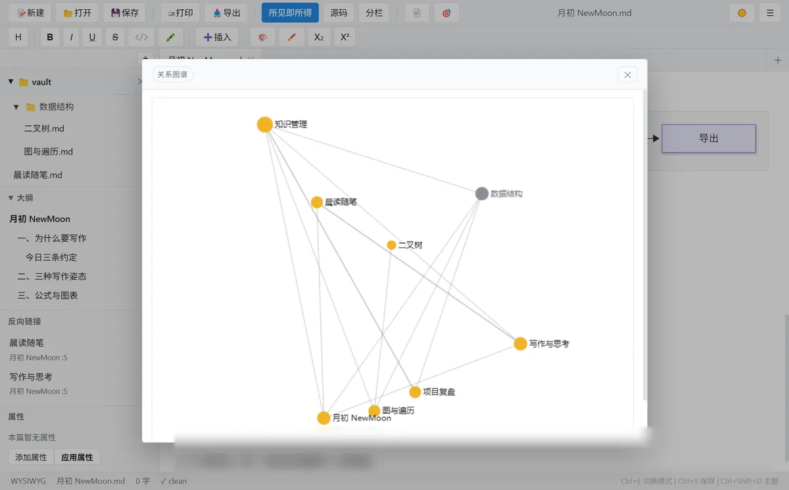
知识图谱点图放大mermaid 流程图、时序图、甘特图与 KaTeX 数学公式原生渲染，双击即可放大细看；表格内支持管道符直写，数据整理不用出编辑器。
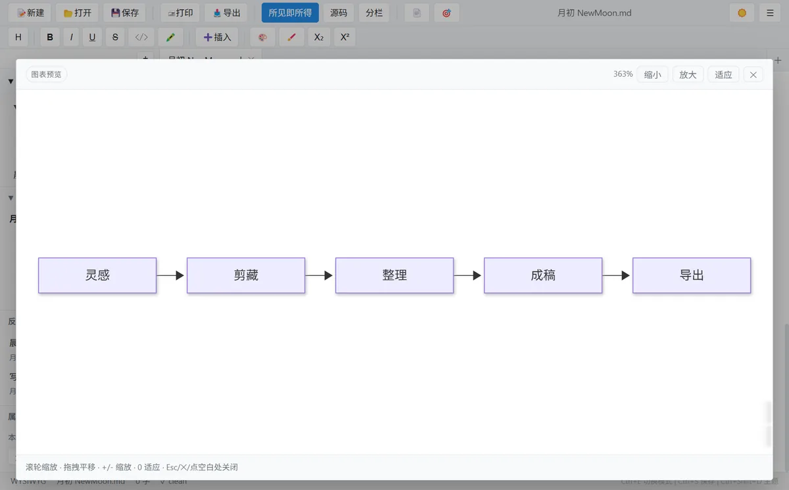
图表放大点图放大自动识别 UTF-8 / GBK / GB18030 / Big5 / Shift-JIS 等常见编码，按原编码无损回写；换行符、BOM、非法字节全部妥善处理——和老系统、旧文档、AI 工具链混用，中文永不乱码。
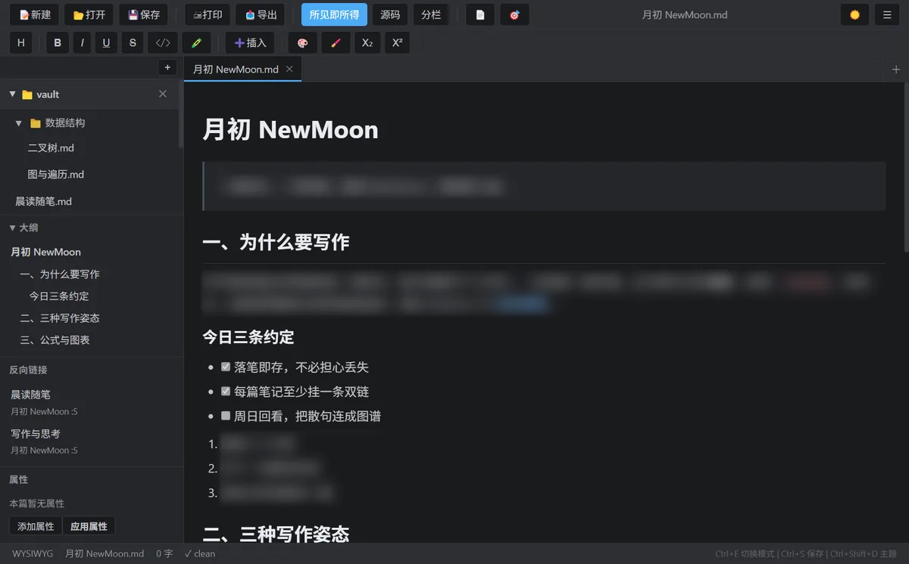
深色主题点图放大导出 HTML / PDF / 图片 / 打印，所见即所得地分页与排版；粘贴的图片自动落盘到库内，文档搬家不断链；网页剪藏，好文章一键入库。
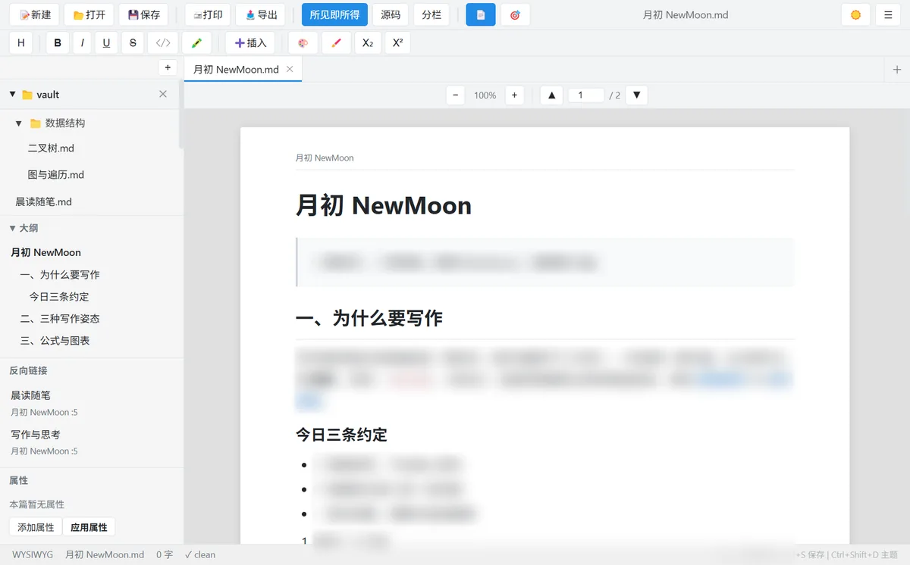
分页视图点图放大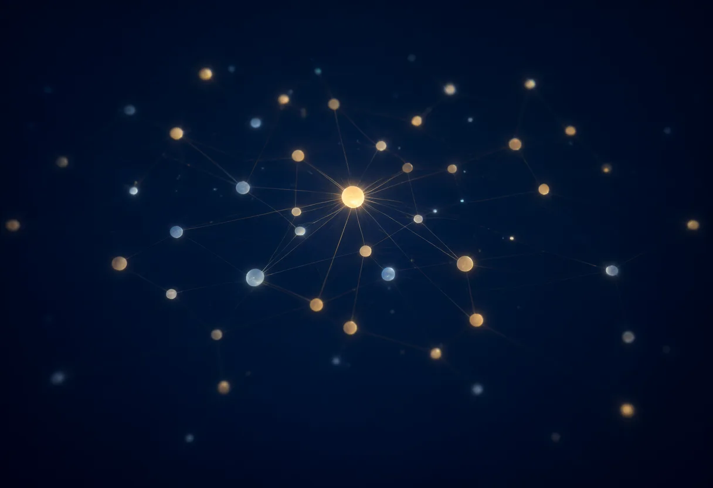
双向链接、反向面板、悬停预览、知识图谱——月初把散落的 .md 串成你的第二大脑。
力导向布局，节点即笔记、连线即链接，一眼看清知识版图。
整个文件夹当一个库来搜，命中高亮、上下文预览，秒级定位。
中文标点自动规整、全半角转换，落笔即符合出版级规范。
[[链接]] 织网，反向面板与悬停预览，写过的每句话都有来路。
2 秒静默落盘、外部修改冲突提醒、崩溃会话恢复，断电不丢稿。
像浏览器一样开标签，跨标签搜索替换，长稿拆分写作不迷路。
大纲侧栏、打字机模式、字数统计，把注意力还给文字本身。
粘贴即落盘到库内 assets，相对路径引用，文档搬家不断链。
所见即所得分页导出，表格按行拆分不截断，交稿即用。
流程图、时序图、数学公式原生渲染，离线可用，导出随文档走。
GBK / Big5 / Shift-JIS 自动识别、原编码回写，中文永不乱码。
浏览器插件一键把正文存为 Markdown，好文章直接入库（实验）。
浅色如纸，深色如墨，护眼如旧书页——三套主题一键切换，也可跟随系统。点击任意截图可放大细看，方向键翻页。
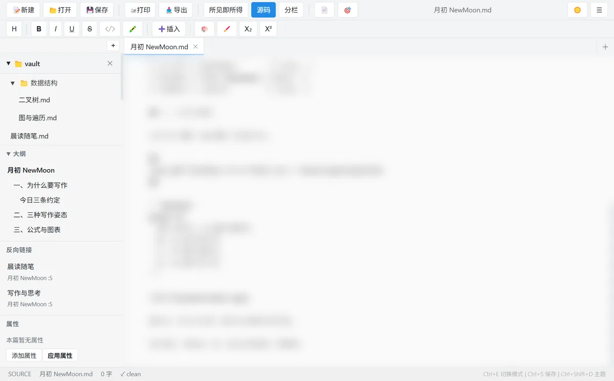
源码模式纯文本底牌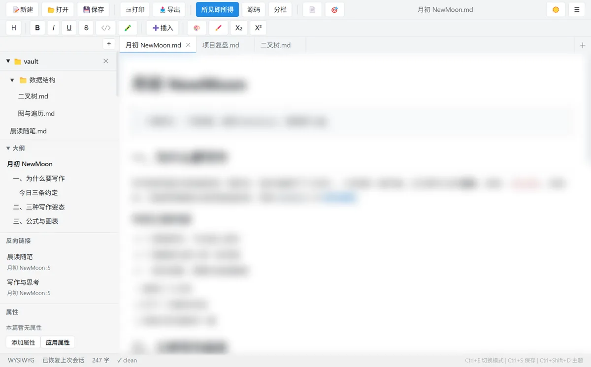
反向链接来路可寻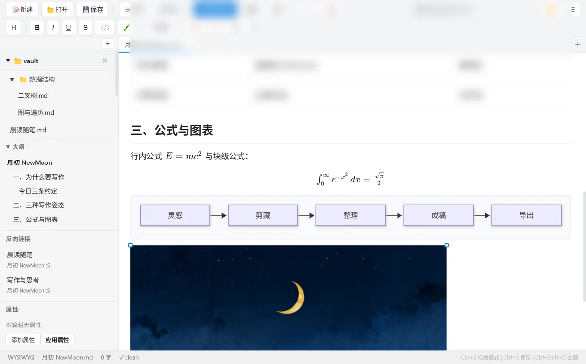
公式KaTeX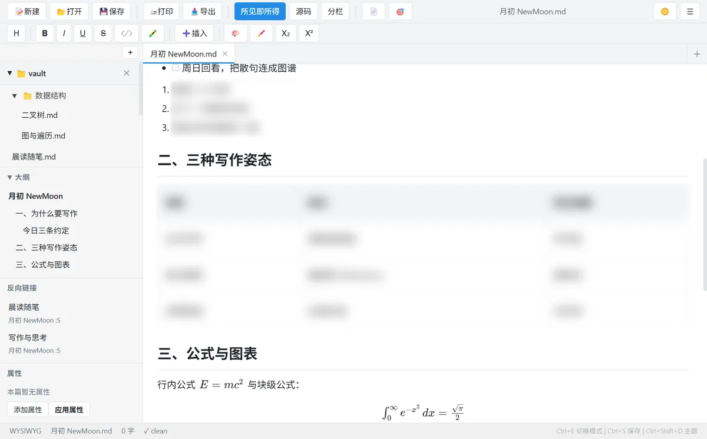
表格管道直写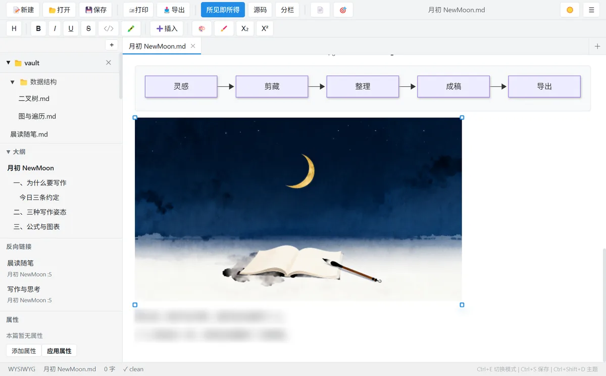
图片粘贴落盘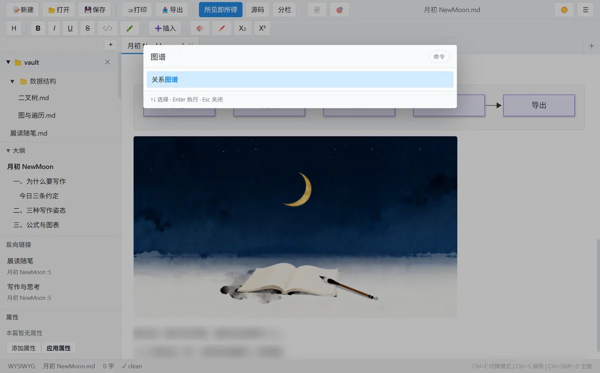
命令面板Ctrl+P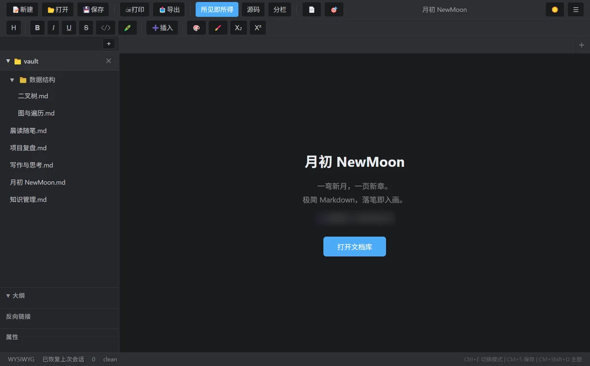
欢迎页最近库v1.0.9 当前版本，开箱即用的全部能力。
| 能力 | 说明 |
|---|---|
| 所见即所得编辑 | 输入即渲染，随时切回源码模式；标题 / 列表 / 任务 / 表格 / 代码块 / 高亮 / 上下标 |
| 双向链接[[wikilink]] | 链接织网、反向面板、悬停预览、未建链接提示 |
| 知识图谱 | 力导向布局，节点即笔记、连线即链接 |
| 库管理 | 整个文件夹当一个库：文件树、全文搜索、最近库、会话恢复 |
| mermaid 图表 | 流程图 / 时序图 / 甘特图离线渲染，双击放大 |
| KaTeX 公式 | 行内与块级数学公式，字体内嵌离线可用 |
| 表格增强 | 表格内管道符直写、单元格编辑、复制为 Markdown |
| 脚注 / 目录 | 学术长文标配，大纲面板一键跳转 |
| 编码感知读写 | UTF-8 / GBK / GB18030 / Big5 / Shift-JIS 自动识别，原编码无损回写 |
| 图片工作流 | 粘贴自动落盘库内、相对路径引用、双击缩放查看 |
| 导出与打印 | HTML / PDF / 图片 / 打印分页，图表公式随文档走 |
| 网页剪藏实验 | 浏览器插件一键把正文存为 Markdown 入库 |
| 自动保存 | 2 秒静默落盘、外部修改冲突提醒、崩溃会话恢复 |
| 多标签 | 像浏览器一样开标签，跨标签搜索替换 |
| 三套主题 | 亮色 / 暗色 / 护眼，一键切换、跟随系统 |
| 专注写作 | 打字机模式、字数统计、快捷键面板 |
两个渠道，同一个安装包。GitHub Releases 为主，官网 /dl/ 为备份。
向导式安装：可自定义安装目录，注册 .md 文件关联（可把月初设为 Markdown 默认编辑器），含开始菜单与桌面快捷方式。
GitHub 下载 MSI（主渠道） 官网备份下载 MSI主渠道 GitHub Releases， 备份 官网 /dl/，两处分发互为镜像。 软件未做代码签名，首次运行如遇 Windows SmartScreen 拦截，点「仍要运行」即可。